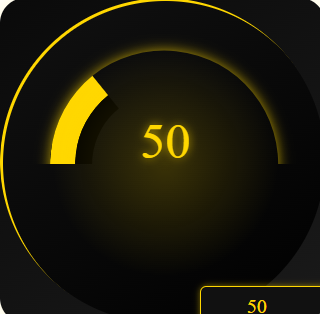
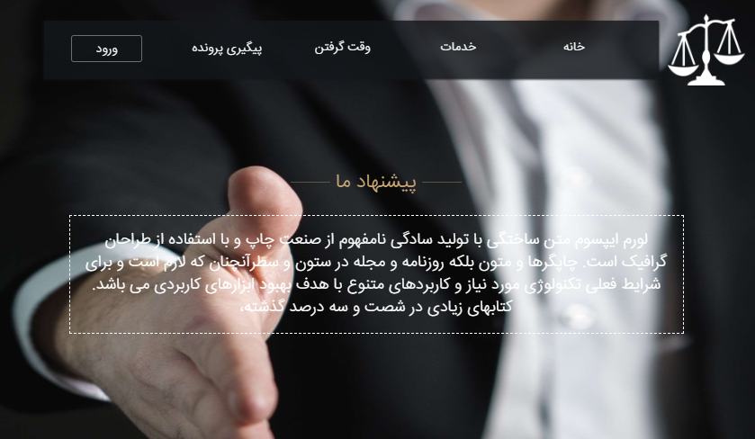

Interfaces
with intention.
I’m Danyal. I bring design and engineering together to build considered web and mobile experiences.
Explore my work01 / SELECTED WORK
A few things
I’ve built.
A selection from my public repositories.
Explore the source, the details, and the craft.

MileMaster
A React mileage dashboard with animated progress and live numeric input.

Legal website collection
A central entry point to a collection of lawyer website templates.
AhangTone
A social music streaming platform
Kamkar
A web interface connecting employers and job seekers
02 / THE PUBLIC ARCHIVE
Years of making.
Open to explore.
From early experiments to product interfaces.
Every entry links to its public source repository.
A public-source collection, including historical projects. Repository access does not imply a live demo or permission to reuse; check each project’s license.
03 / BEHIND THE INTERFACES
Thoughtful by design.
Technical by nature.
I’m Danyal Yasheikh, a Senior Frontend Developer & Team Lead, building web and mobile experiences since 2011.
My work spans React applications, native-integrated mobile interfaces, dashboards and responsive websites. I care about clear architecture, performance and the small details that make a product feel right.
Beyond implementation, I lead frontend teams and mentor developers, connecting design decisions with dependable engineering.
HAVE SOMETHING IN MIND?